Управљање пословним процесима
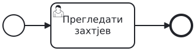
Кругови означавају почетак и крај; задатак је посао који треба обавити. Стрелица задаје редослијед.
Свако за себе: шта је активно док преглед још траје? Затим упоредите.
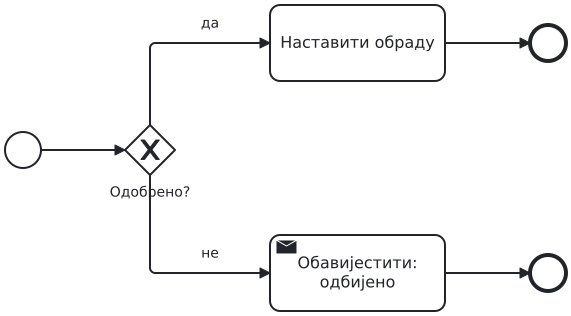
Одлука користи познат податак и бира једну путању.
Захтјев је одбијен. Који посао се обавља, а који се прескаче?
Раздвајање покреће обје гране; спајање чека обје.
Буџет је провјерен, доступност још није. Може ли процес да се заврши?
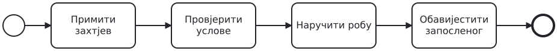
Запослени тражи робу. Преко 1.000 € треба одобрење руководиоца; одбијање завршава захтјев. Иначе се буџет и доступност провјеравају независно и истовремено. Сачекајте обје провјере. Наручујемо само ако су оба резултата позитивна. Сваки исход јављамо запосленом.
Прво свако скицира одлуке; затим у пару направите модел.
Ово су критеријуми за преглед вашег модела.
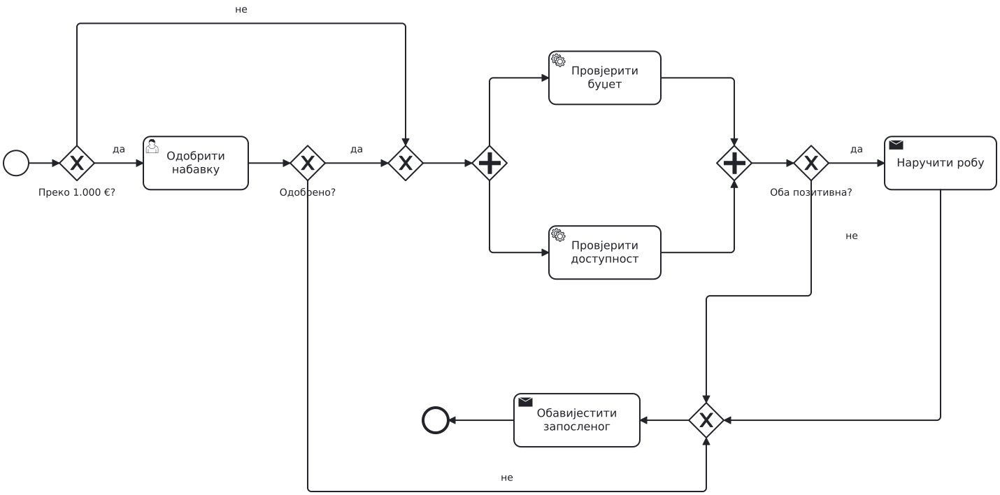
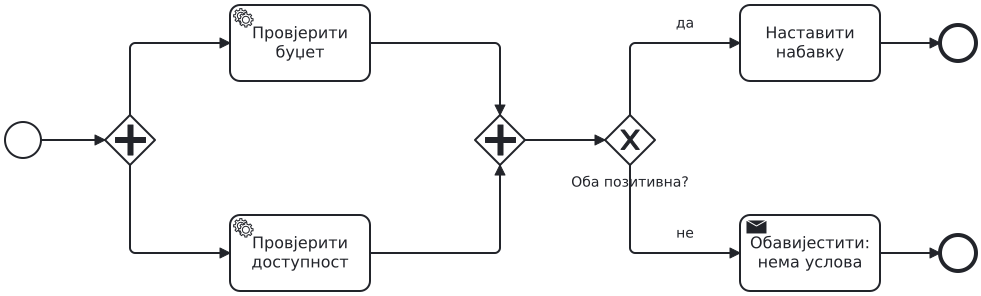
AND чека завршетак рада; XOR чита резултате. Завршена провјера не мора бити позитивна.
Који захтјев оправдава сваки gateway? Исправите свој модел прије наставка.
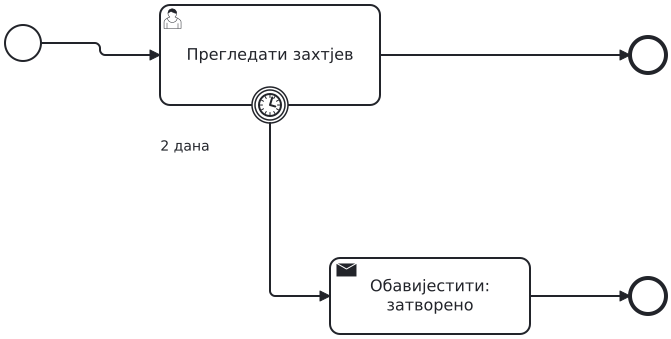
Ако преглед није завршен за два дана, пун обод означава прекид задатка.
Може ли након истека овог рока преглед завршити нормалном путањом?
Испрекидан обод: послије дана шаљемо један подсјетник. Преглед остаје активан.
Шта је и даље активно када се заврши грана подсјетника?
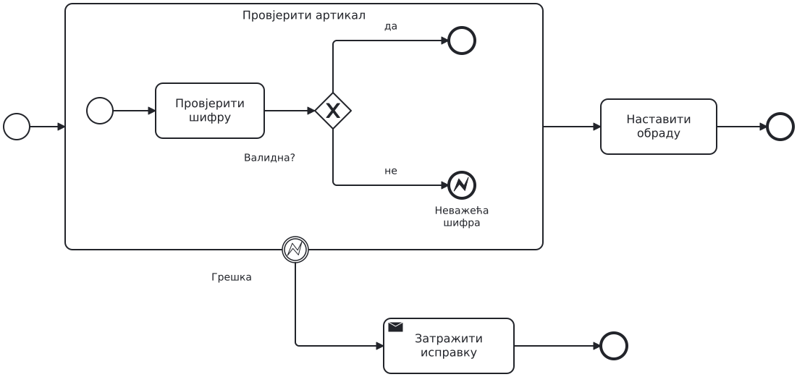
Потпроцес задаје опсег рада. Error end баца грешку; boundary на граници прекида тај опсег и покреће обраду.
Којом путањом идемо ако је шифра исправна, а којом ако није?
Дорадите свој модел A. Неважећа шифра артикла мора прекинути обје провјере, укључујући другу ако још траје. Обавијестите запосленог да треба да пошаље нов, исправљен захтјев.
Не мијењајте правило за обичан негативан резултат провјере.
Обје провјере заједно имају рок од 48 часова. Послије 24 часа шаљемо један подсјетник без прекида провјера. Истек рока прекида незавршене провјере и води на ручну провјеру услова. Њени резултати одређују наставак набавке.
Кратка индивидуална скица, затим једно рјешење у пару.
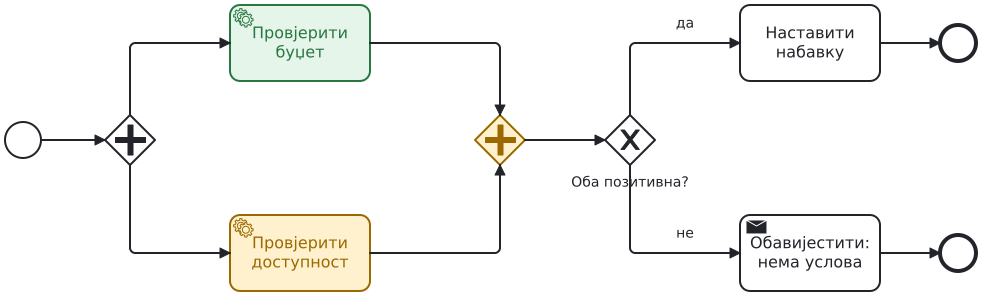
Обје провјере заврше за 10 часова; једна за 20, друга за 30 часова; једна за 20, друга још траје након 48 часова.
За сваки случај покажите активно чекање, подсјетник и наставак.
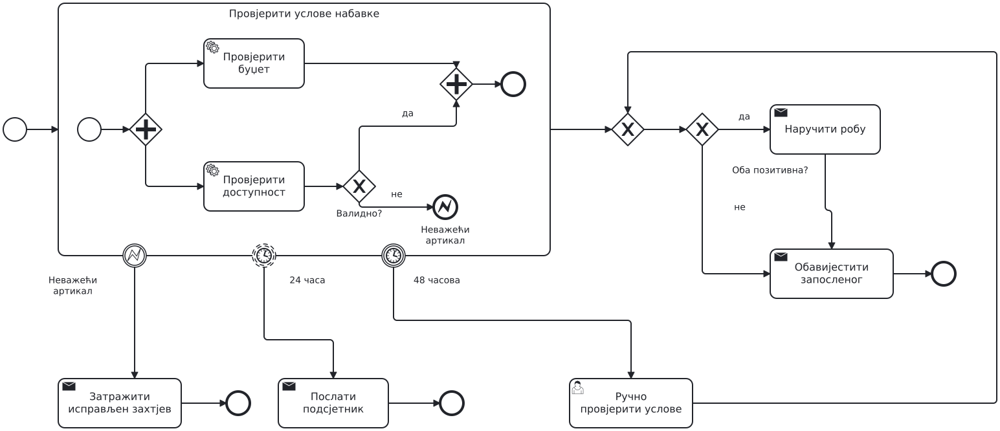
Рок важи за обје провјере заједно. Подсјетник их не прекида; истек рока прекида преостали рад. Ручна провјера је изван тог опсега.
Провјерите три случаја и исправите свој модел.
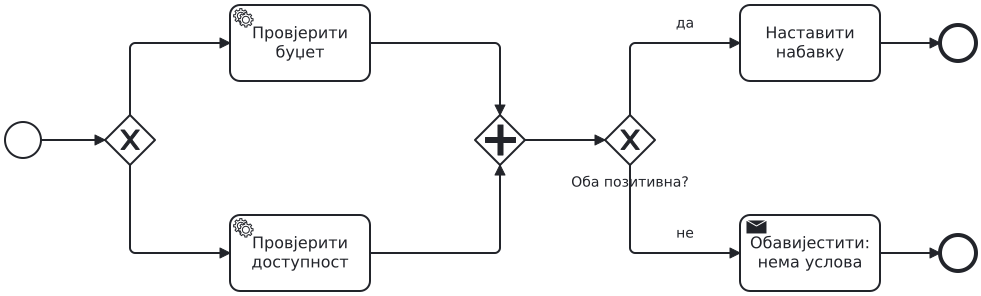
Намјерно погрешан модел. Изабрана је само једна провјера.
Који токен AND неће добити? Предложите исправку и објасните је.
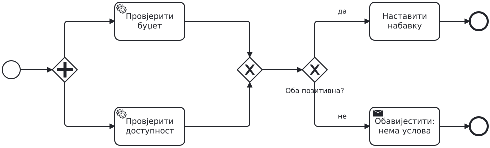
Намјерно погрешан модел. XOR спајање не синхронизује гране.
Колико пута може кренути наставак? Наведите конкретан редослијед завршетака.
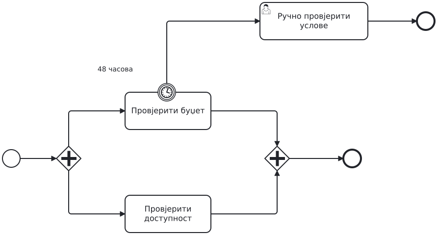
Намјерно погрешан модел. Рок је постављен само на провјеру буџета.
Буџет заврши за 20 часова, доступност траје 60. Да ли се активира ручна провјера?
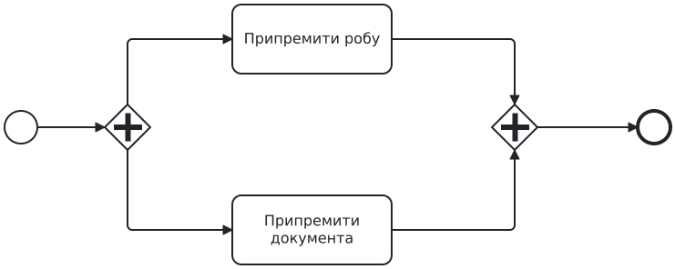
Цијела припрема испоруке има рок од три часа. Ако истекне, прекините оба посла и обавијестите оператера.
Скицирајте опсег рока и резервни ток. Објасните избор у једној реченици.
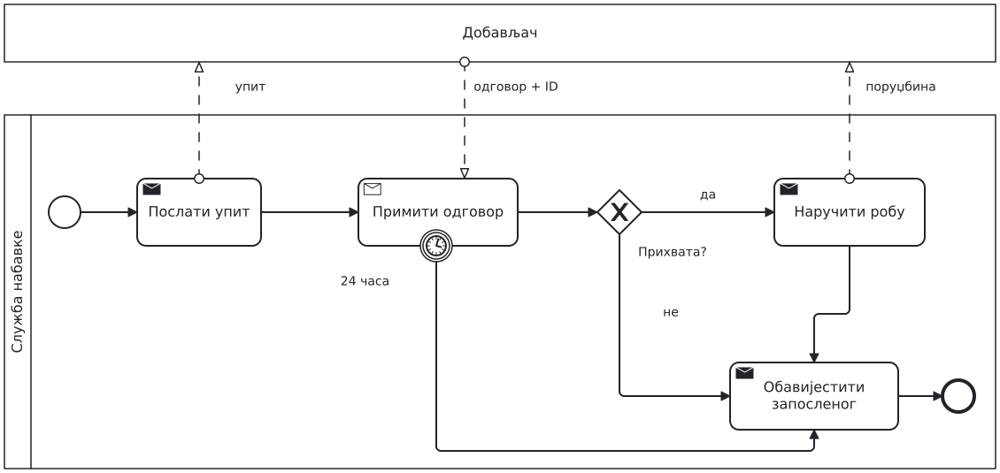
Receive task чека поруку; прекидни тајмер ограничава чекање. XOR након пријема чита одговор.
Касни одговор не отвара поново затворен захтјев.